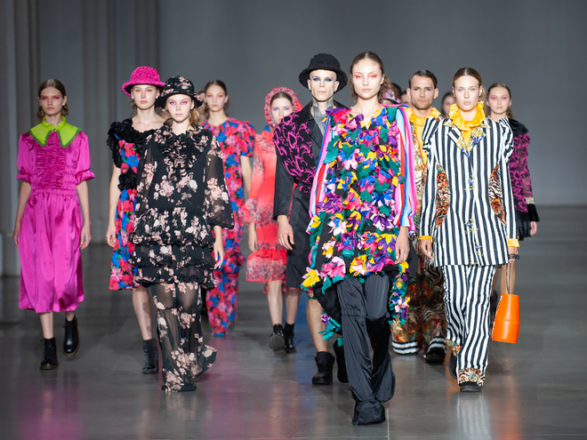
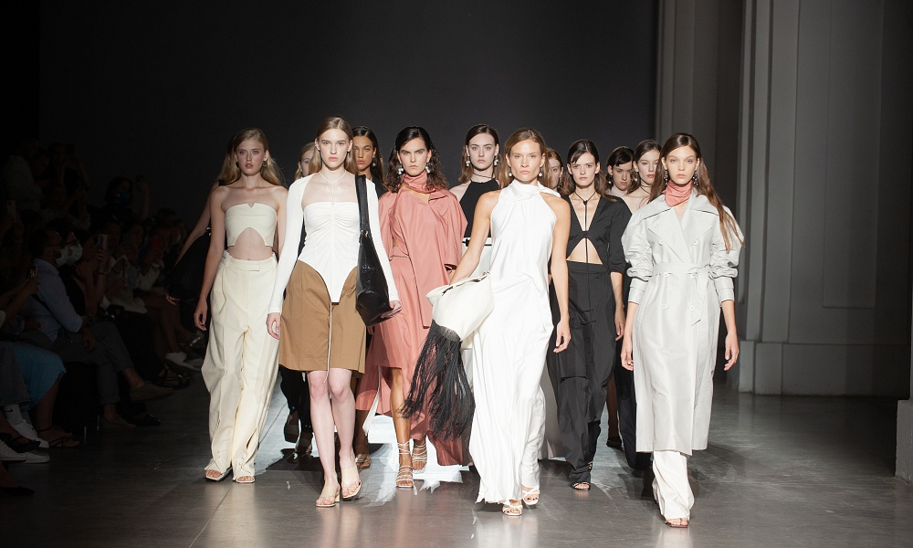

At the beginning of 2022, it is planned to grandly open a new era of Ukrainian designers.
New items for the winter-spring season will be presented.
The project is focused on charity, 5% of the purchase at the show will go to help orphans.
For the eight times we presented the designers with the Vegan Fashion Awards.
This year 15 models of vegan mods have taken away from the city in fifteen nominations.
“Vegan fashion will lay its own way for the suspension and that it is more relevant, if not earlier.
It is important for companies to expand the assortment of vegan products and say goodbye to the harsh methods of making food. "